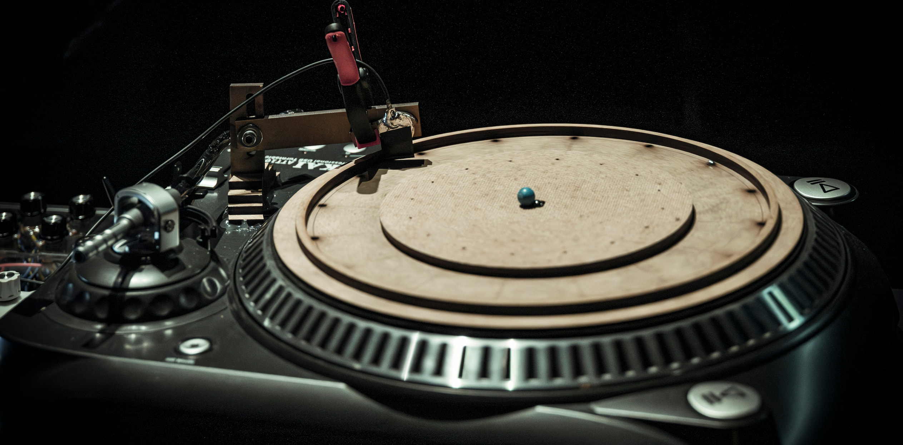
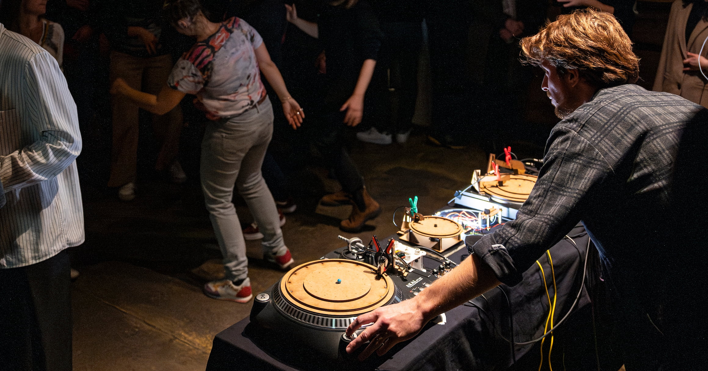
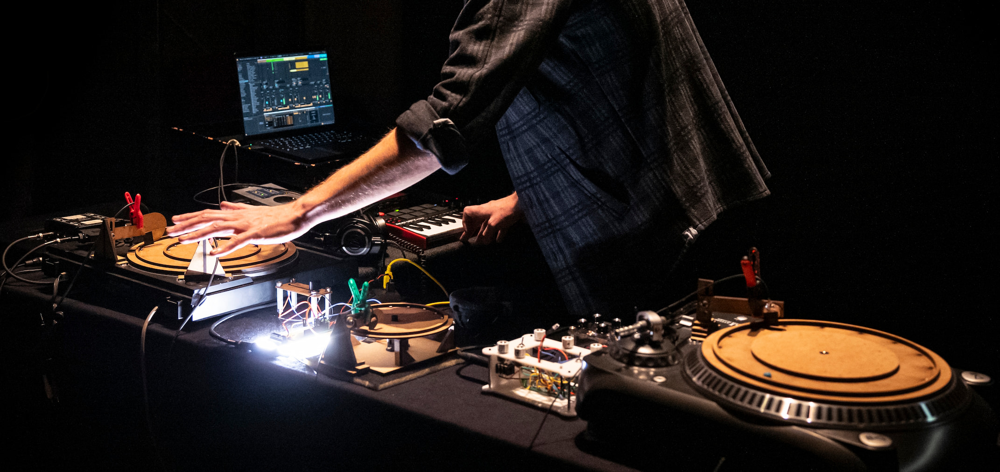

« Projet Vinyle » est une performance qui interroge la nature même de la composition, où l'aléatoire et l'intention s'entrelacent.
Platines vinyles modifiées, synthétiseur DIY, billes déposées au hasard sur un disque d'Euclide — des polyrythmes émergents et des textures sonores font écho à l'impermanence de l'expérience musicale.

Chaque performance est une exploration unique et inédite, une œuvre éphémère qui oscille entre musique électronique, répétitive et expérimentale. Elle explore la tension entre une approche rythmique complexe et des sonorités électroniques familières, créant un espace sonore où expérimentation et musique à danser se rejoignent.
Le public peut être invité à déposer des billes et à utiliser des capteurs de mouvement — il agit alors directement sur la création musicale en cours.
L'espace scénique est à même le sol, au même niveau que le public. Il suffit d'une prise de courant et d'une sonorisation adaptée.

Percussionniste et compositeur engagé dans la création contemporaine, la musique électronique et les percussions digitales, Louis Delignon oriente sa recherche artistique sur le développement de dispositifs électroniques DIY, mettant en relation la création de matières sonores analogiques avec des interactions humaines.
